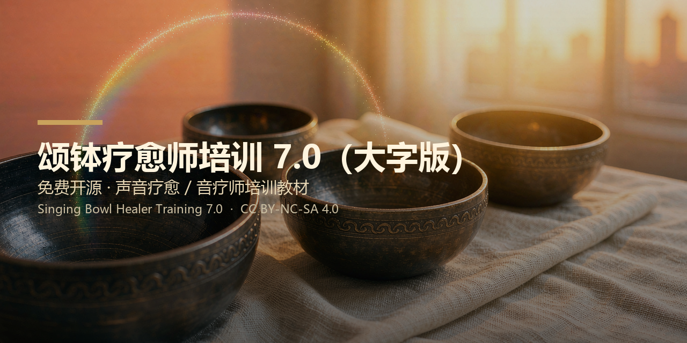

Free & open-source · Sound Healing / Sound-Therapy Practitioner Training · CC BY-NC-SA 4.0
This site is the English edition of the open-source repository singing-bowl-healer-training. It systematically covers singing-bowl healing, sound healing, and practitioner training.
📘 English Edition (README) 📖 中文全文 (Chinese full text)docs/media/.This work is licensed under CC BY-NC-SA 4.0 (Attribution–NonCommercial–ShareAlike). ✅ Free to read, download, share, teach; ✅ adapt (same license); ❌ not for commercial use.
⚠️ Disclaimer: content is for learning and training only; it is not medical advice and cannot replace professional care.